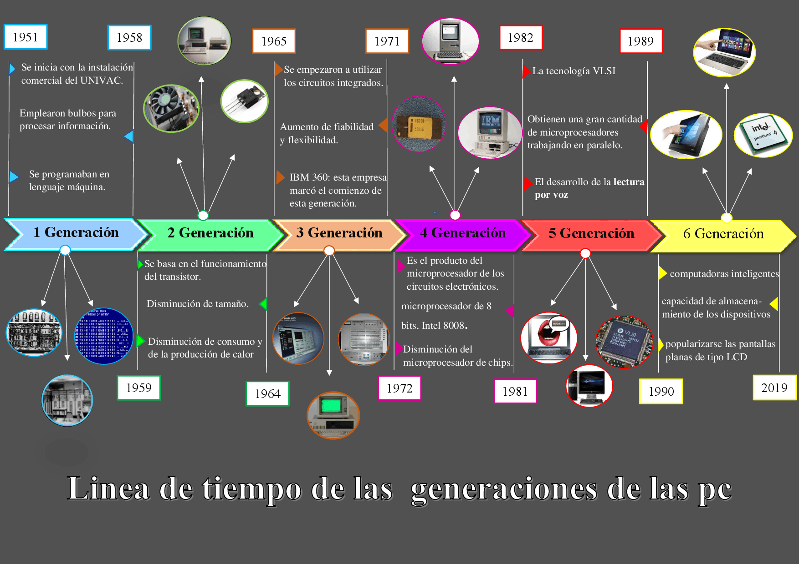
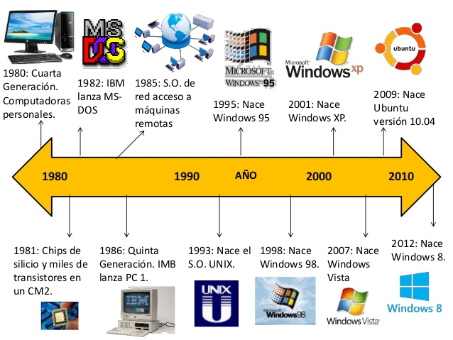

Contenido de la página de la evolucion del almacenamiento
Heroes de la informatica
Bill Gates
Steve Jobs
Tim Berners-Lee, padre de la Web
Larry Page, creador de Google
Sergey Brin, fundador de Google
Mark Zuckerberg, creador de Facebook
Jeff Bezos, fundador de Amazon
Dennis Ritchie, creador del Lenguaje C
Alan Turing, padre de la Computación
Linus Torvalds, creador de Linux
Jimmy Wales, fundador de Wikipedia
Steve Wozniak, inventor de Apple
Richard Stallman, inició Software Libre
Rasmus Lerdorf, creador de PHP
Fuente: https://disenowebakus.net/biografia-informaticos.php
Linea del tiempo evolucion de la informatica

Los orígenes de la informática pueden situarse al menos en cuatro momentos históricos. El primero es el más obvio: la Antigüedad, cuando civilizaciones nacientes empezaron a ayudarse de objetos para calcular y contar tales como las piedrecillas (en latín calculi, del que viene el término actual calcular), los tableros de cálculo y los ábacos, todos los cuales han llegado hasta el siglo xx (Aspray 1990).
Fuente: https://www.bbvaopenmind.com/articulos/historia-de-la-informatica/
evolucion de los sistemas operativos

Usar un computador no siempre fue tan fácil. Los sistemas operativos surgieron como una necesidad para poder utilizar máquinas muy complejas en tiempos que se necesitaba personal muy especializado para poder operarlas. La evolución de los sistemas operativos estuvo, por lo tanto, muy ligada a las características y necesidades particulares de las máquinas disponibles. Resulta difícil hablar de los sistemas operativos sin referirse al mismo tiempo a la evolución del hardware, pues ambos aspectos han avanzado de la mano durante gran parte de la historia.
Fuente:http://iic2333.ing.puc.cl/activities/history.html